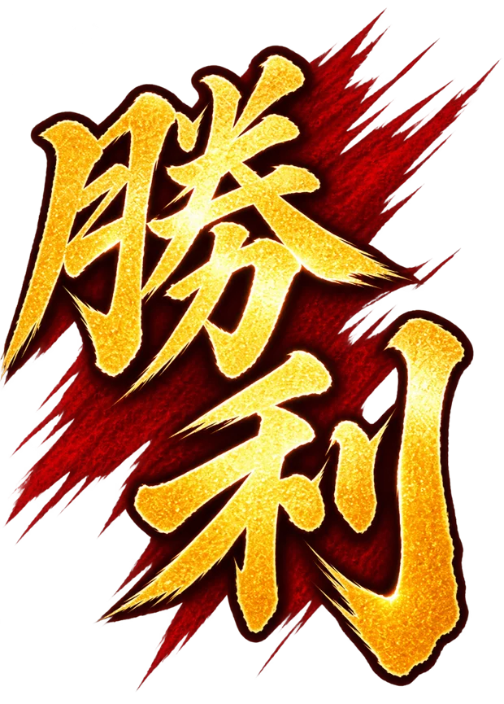

誠の軌跡
幕末物語
志を胸に、時代を駆ける。
史実をたどりながら、盤上で新選組を指揮せよ。
史実に基づく物語ですが、対局・勝敗・駒の配置はゲーム独自の演出です。
テスト中：全章・終章に直接移動できます。クリア・人物獲得は保存しません。



志を胸に、時代を駆ける。
史実をたどりながら、盤上で新選組を指揮せよ。
史実に基づく物語ですが、対局・勝敗・駒の配置はゲーム独自の演出です。
テスト中：全章・終章に直接移動できます。クリア・人物獲得は保存しません。
